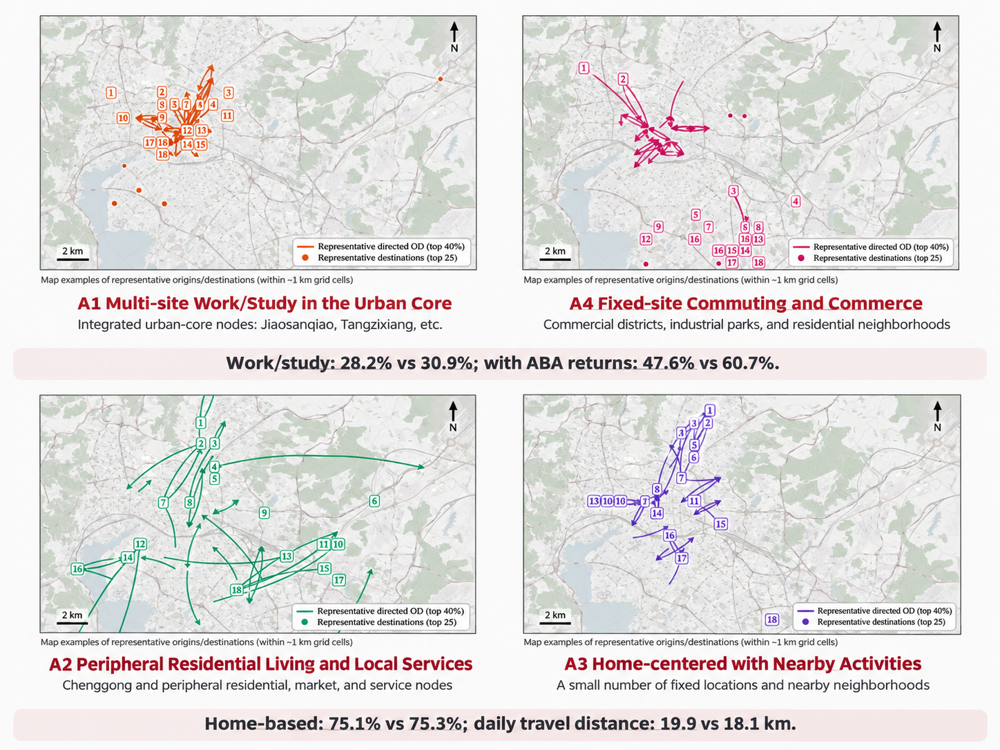
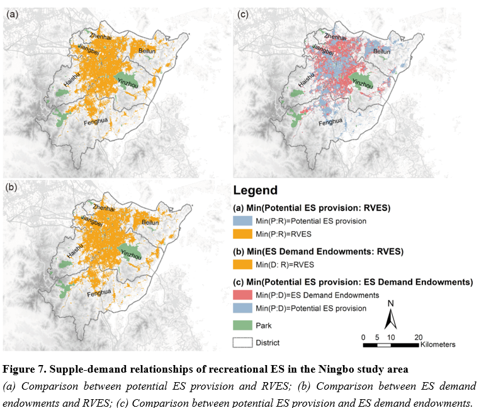
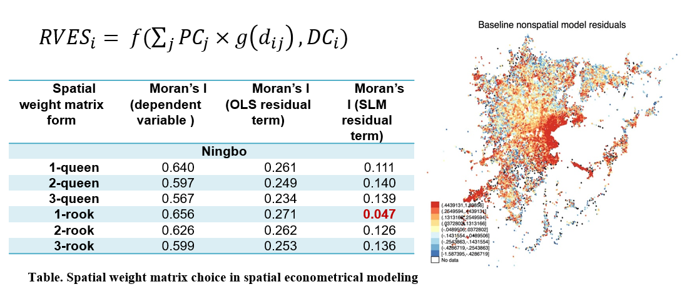
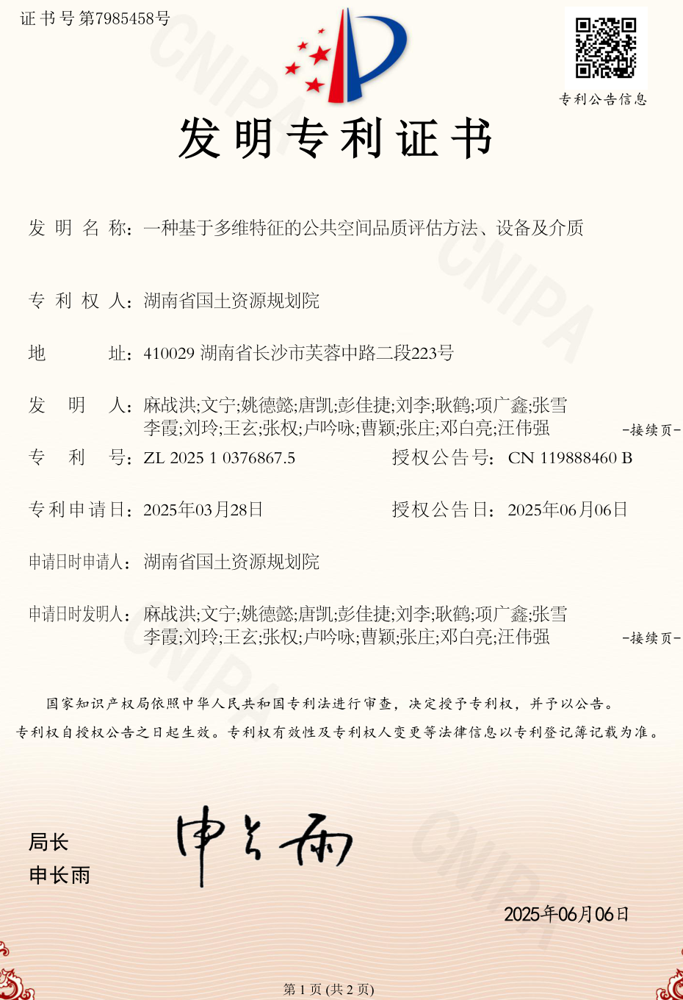
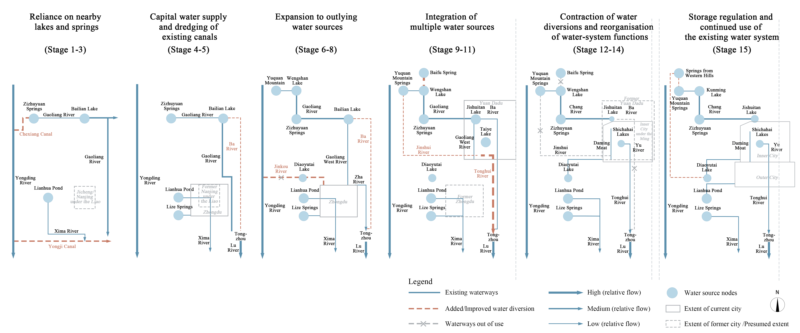
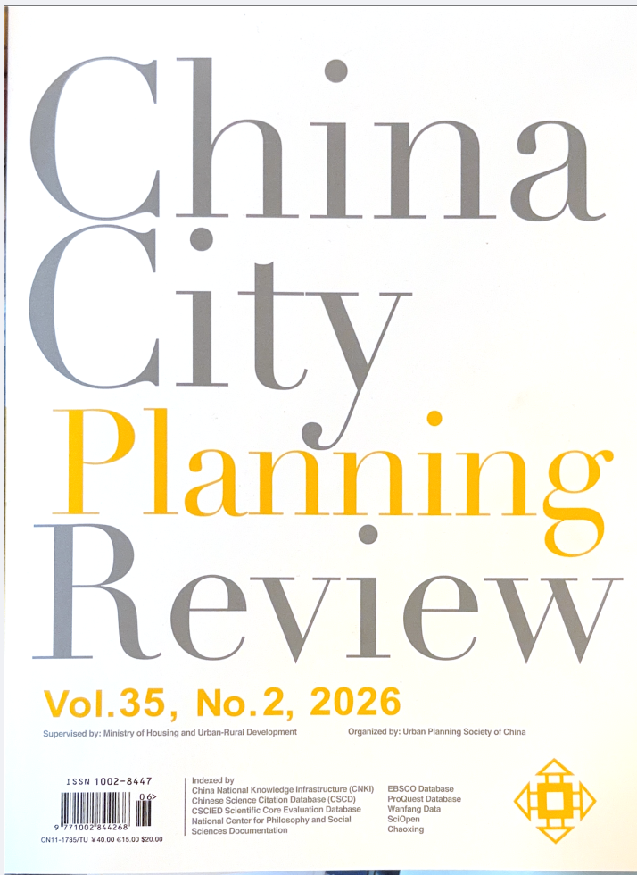

Publications
Selected publications, presentation and patent.
Mobility, GeoAI & public-space research

Conference presentation
How Institutional Anchors Organize Daily Mobility: Open-Pattern and Recurrent-Anchor Mechanisms in Kunming’s Urban Flows
Xi, J., & Xu, L.
TRB 106th Annual Meeting, 2027
Washington, D.C. · Accepted for presentation
2027

Journal article
Evaluating the quality of urban public space based on the scene perception theory
Peng, J., Xi, J., et al.
Urban Development Studies, 2025
32(12), 84–91
2025

Manuscript under review
Disentangling the Spatial and Preferential Aspects in the Value Realization of the Spatially Sensitive Ecosystem Service
Huang, K., Yin, J., Xi, J., Ye, Y., & Xu, L.
Ecosystem Health and Sustainability, 2026
Under review
2026

Chinese invention patent
A method, device, and medium for evaluating the quality of public spaces based on multi-dimensional features
Ma, Z. H., et al. · Co-inventor: Xi, J.
CN 119888460 B, 2025
Application ZL 2025 1 0376867.5 · Granted 6 June 2025
2025
Selected Research Experience

Persistence and Reconfiguration of Beijing’s Historical Water System
Journal of Historical Geography | Under review | Eastern Han to late Qing (25–1901 CE)
- Reconstructed historical water sources, rivers, canals and connections using dynastic histories, gazetteers, historical maps, archaeological evidence and historical GIS; organized nearly two millennia into 15 stages and six major periods.
- Examined how shifting priorities among urban water supply, irrigation and grain-canal transport guided source selection, water allocation, hydraulic works and the creation or rerouting of waterway routes.
- Traced how expanding, redirecting and reusing canals redistributed water and grain-transport flows, reshaping urban functions and the persistence, conversion or relocation of water-related places across successive dynasties (urban spatial layering and path dependence).
Landscape history

Journal article
Scenery Borrowing from Within and Beyond: A Study on Viewing Landscape of Yuanmingyuan and Its Surrounding Areas in Emperor Qianlong’s Poems
Xi, J., & Liu, Y.
China City Planning Review, 2026
35(2), 76–88
2026